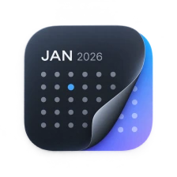
Apple Calendar + Reminders, in your menu bar
Your day,
closer.
DayEdge brings the calendars and reminders already on your Mac into one quick menu-bar view. Nothing new to manage.
FreeOpen sourcePrivate by design
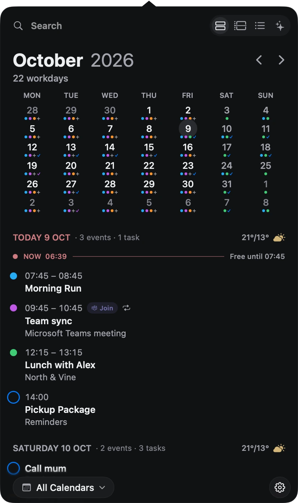
The month ahead. The moment you’re in.
01 Make it yours
A different tone.
The same clear day.
Near-black, cool gray, bright paper. Find a look that feels at home on your desktop.
Graphite Pro
Near-black surfaces with soft, muted accents.
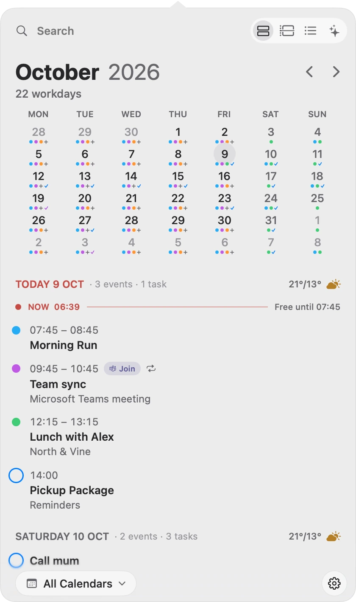
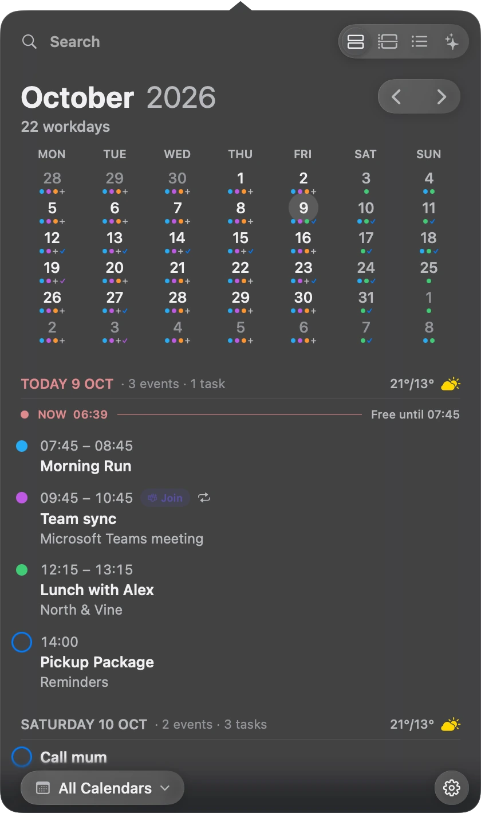
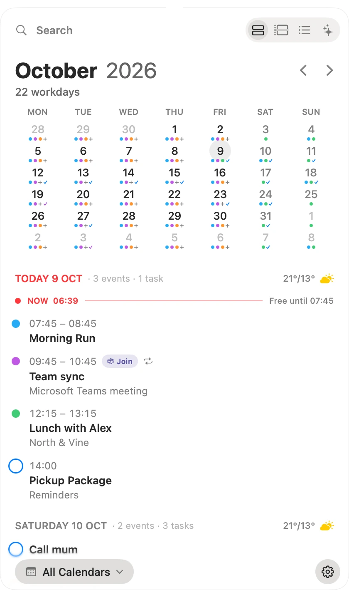
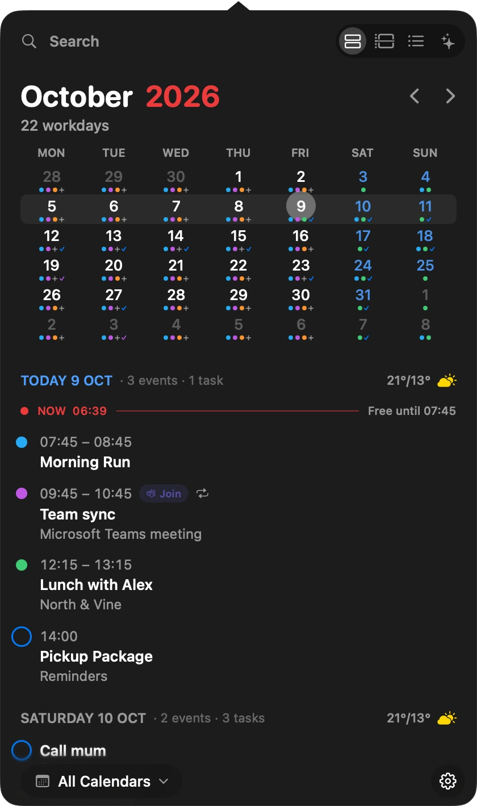
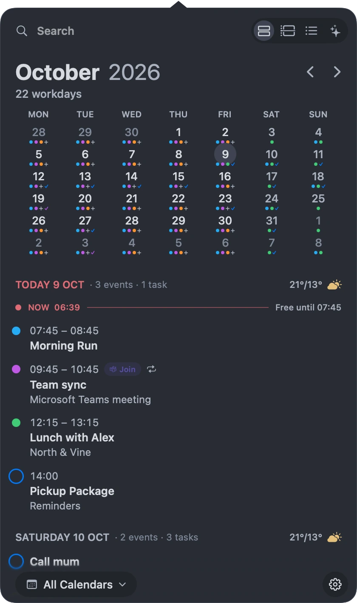

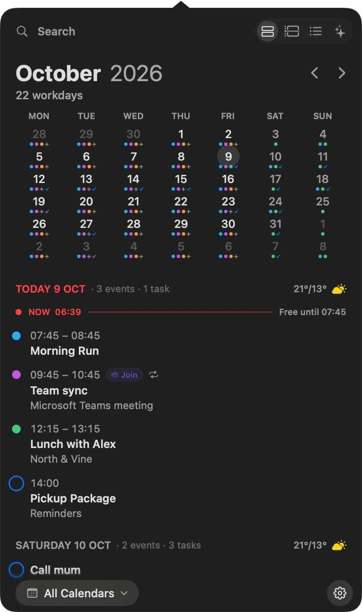
Eight themes. One familiar calendar.
02 Daily agenda
See the shape
of your day.
Your events and reminders share a timeline. See what’s next, what needs doing, and the space in between.
- A
Events meet reminders
Timed tasks sit alongside your calendar events.
- B
A little room to breathe
The now line shows how long you’re free.
- C
A glance outside
Weather, sunrise, and sunset in your daily view.
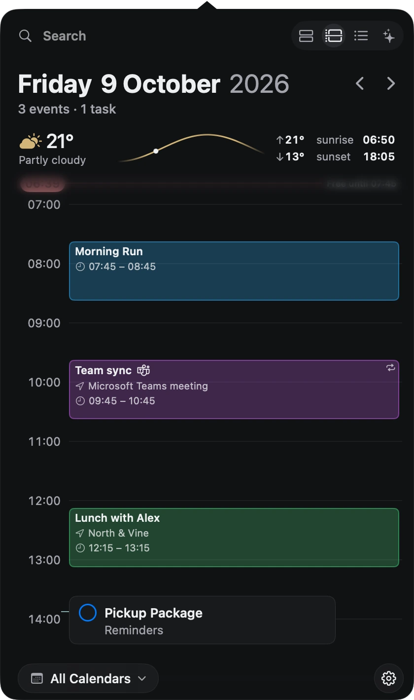
03 Tasks
What needs doing,
close at hand.
Your reminders, organised by list. See what needs attention, switch between work and personal tasks, and add the next one in a few words.
Add in a few words
Send invoice tomorrow at 10 #Work !!
Set the due date, list and priority in one line.
Find exactly what you need
invoice type:task day:tomorrow
Start with a word. Add filters only when you need them.
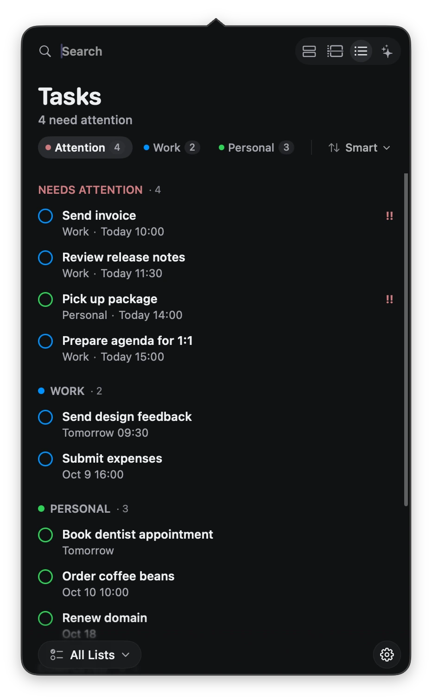
04 Natural language
Less filling in.
More getting on.
Type “Dentist next Tuesday at 10.” DayEdge picks out the date and time, ready to create an event or reminder. Use ordinary language to find things, too.
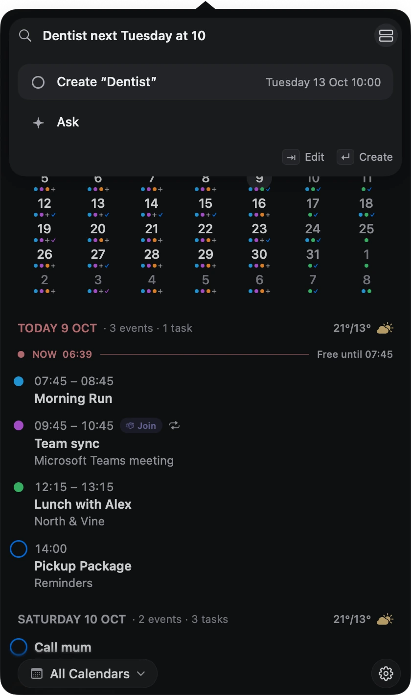
05 Search
A few words.
The right result.
Find events and tasks from one search field. Start with a title or a phrase like “standup tomorrow”. Add familiar search operators to narrow by person, date or type.
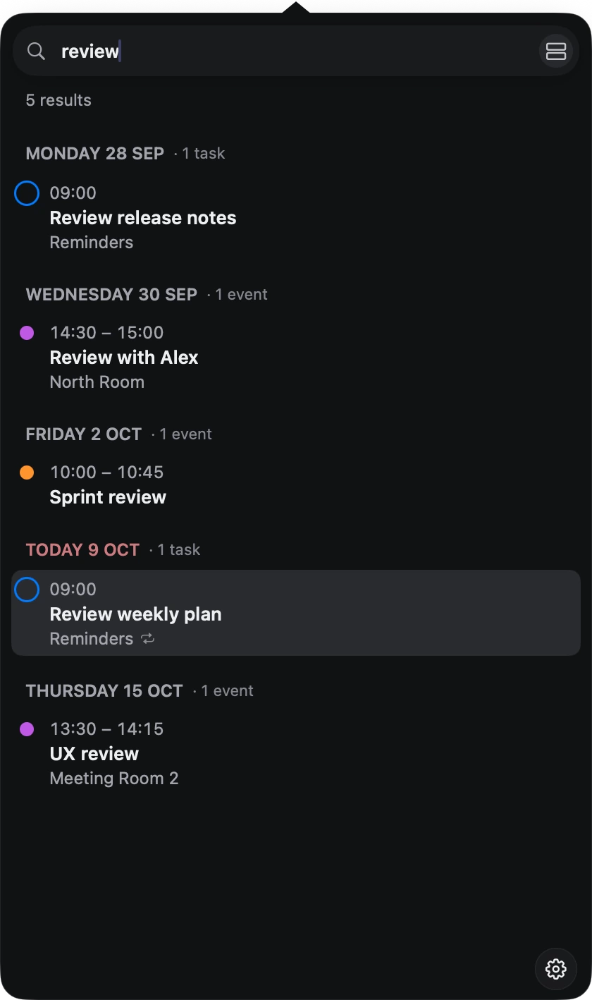
A familiar way to be specific
review with:Alex type:event day:tomorrow
Combine a keyword with a participant, event type and date.
06 Ask your schedule
A conversation
with your calendar.
Find an event, ask about a busy afternoon, or work through a change of plans. Bring your own context to the conversation.
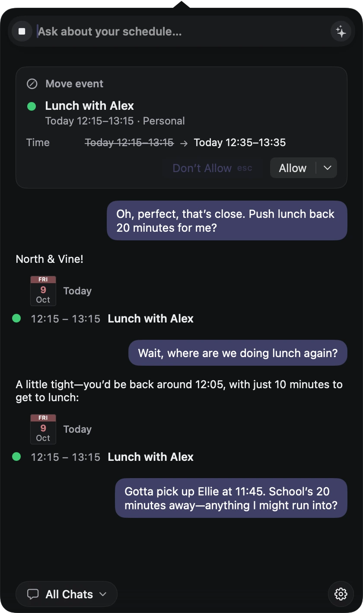
- 01
From question to context
Ask about your actual events and reminders.
- 02
A change you can review
See the proposed time before allowing a move.
Ask uses on-device models by default. For more advanced conversations, you can opt in to external model integration. Available actions depend on the selected model and your approval settings.
07 Meeting reminder
For the “one more minute” crowd.
A gentle nudge. Or a full-screen countdown for when “just a sec” turns into five minutes.
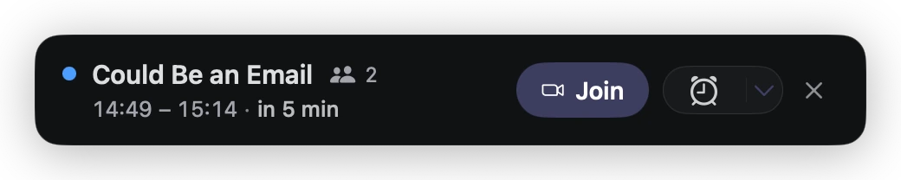
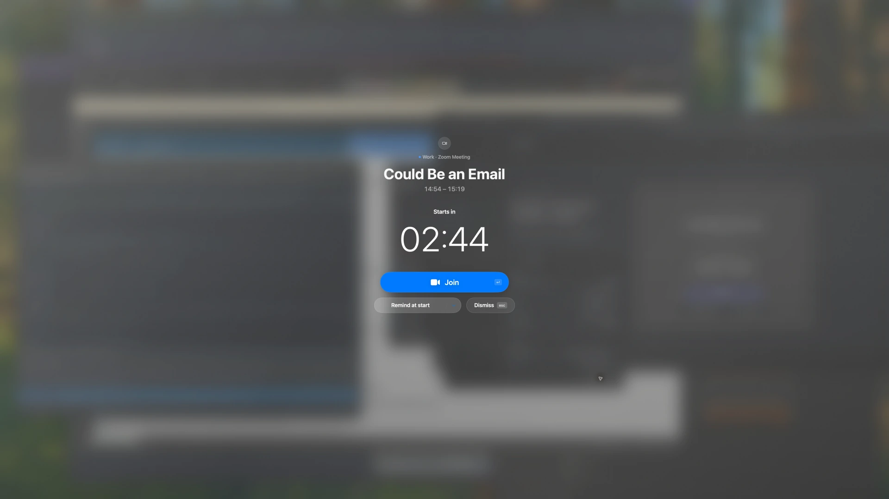
And a few more things
Next meeting, one click away
See your next meeting in the menu bar. When it's time, join with one click.
Tasks that need attention
A quiet menu-bar badge keeps tasks due today and overdue reminders in sight.
What's left today
See how many events remain today, without opening your calendar.
Your calendars, already there
Works with the calendars and reminder lists already on your Mac.
Keyboard friendly
Switch views, search, complete tasks and join meetings from the keyboard.
Teams and Zoom, ready to join
Join Teams and Zoom meetings from your calendar, opening the app when installed.
DayEdge 1.0.0 for macOS
Keep your day
close at hand.
macOS 15 or later · Apple Silicon and Intel
One command. Your day, closer.
With Homebrew installed, paste this into Terminal.
brew install --cask dayedge/tap/dayedgeThen open DayEdge from Applications. Allow Calendar and Reminders access to bring your day into view.
About this install
DayEdge is self-signed and not notarized by Apple. Our Homebrew tap removes download quarantine from DayEdge.app after installation and updates. Your Mac’s global security settings stay unchanged.